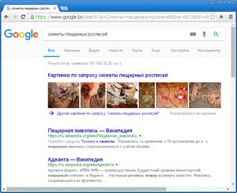
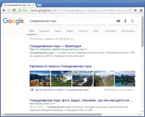
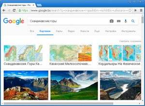
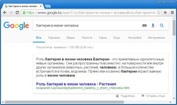
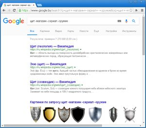
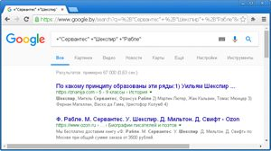
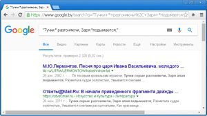
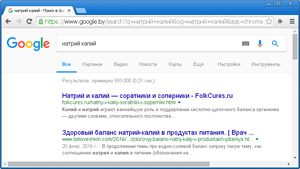
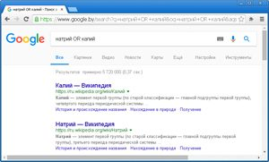

7.1. Поиск информации в Интернете
В современный век информационных технологий практически любой человек использует для поиска информации сервисы Интернета.
Поисковые системы постоянно собирают, систематизируют и сохраняют информацию по всему миру. Поиск информации в поисковой системе осуществляется по запросу.
Под запросом в поисковой системе понимают набор слов, фраз, символов, которые пользователь вводит в строку поиска, чтобы найти интересующую его информацию.
Современные поисковые системы позволяют осуществлять поиск по голосовым запросам или использовать в качестве запроса изображение.
Результатом поиска будет список сайтов (пример 7.1 и пример 7.2). Количество найденных сайтов может быть очень большим, и просмотреть их все часто не представляется возможным. На практике обычно просматривают 5—15 сайтов, найденных первыми.
Результативность поиска в значительной степени зависит от умения пользователя корректно сформулировать поисковый запрос. Формулировка фразы или выбор слов для поиска позволит получить более точный результат.
7.2. Сокращение области поиска
Для каждого из сайтов, найденных в результате поискового запроса, будет истинным следующее высказывание: «На странице сайта присутствует информация, соответствующая поисковому запросу». Все такие сайты образуют множество сайтов, удовлетворяющих поисковому запросу.
При построении поискового запроса некоторые сайты можно исключить из рассмотрения. Для этого к основному запросу добавляется слово со знаком минус («-») перед ним. Сайты, содержащие слова, отмеченные этим знаком «-», не будут включены в список найденных (пример 7.3 и пример 7.4).
Полученный перечень сайтов образует подмножество множества сайтов, удовлетворяющих основному запросу. Для всех таких сайтов высказывание «На странице сайта присутствует информация, соответствующая слову, отмеченному знаком -» будет восприниматься поисковой системой как ложное.
Изобразим такой поиск с помощью кругов Эйлера (A — множество сайтов, удовлетворяющих основному запросу, B — множество сайтов, исключенных с помощью слова, отмеченного минусом):

7.3. Использование операторов в поисковых запросах
Операторы поиска — это слова или символы, добавляемые к поисковым запросам для уточнения результатов.
Оператор «+» позволяет осуществлять поиск документов, в которых обязательно присутствует слово, стоящее за символом. Допустимо использовать несколько операторов «+» в одном запросе (пример 7.5). Оператор «-» мы рассмотрели в предыдущем пункте параграфа.
Оператор «*» заменяет любое неизвестное слово в запросе (пример 7.6).
Если поместить слова или фразу в кавычки, то в результатах поиска будут показаны только те страницы, на которых эти слова (фразы) расположены в том же порядке, что и в запросе в кавычках. Кавычки используются тогда, когда необходимо найти точное слово или фразу, цитату.
Другие операторы, рассматриваемые далее, имеют различные обозначения для разных поисковых систем (например, для Google и Яндекс).
Оператор OR (поисковая система Google) позволяет найти страницы, содержащие хотя бы одно из нескольких слов, и соответствует логической операции ИЛИ (пример 7.7). Для поисковой системы Яндекс аналогичный оператор обозначается |.
Некоторые из операторов могут не иметь аналогов в других поисковых системах. Оператор & поисковой системы Яндекс осуществляет поиск документов, в которых слова запроса, объединенные данным оператором, встречаются в одном предложении.
|
Пример 7.1. Найдем с помощью поисковой системы информацию о сюжетах пещерных росписей.  В результате поиска найдено более 160 тыс. сайтов, содержащих искомую информацию. Пример 7.2 . Найдем с помощью поисковой системы информацию о Скандинавских горах для урока географии.  В результате поиска найдено 160 тыс. сайтов, содержащих искомую информацию. Можно переключиться в раздел «Картинки» и просмотреть графические изображения, удовлетворяющие запросу.  |
|
Пример 7.3. Найдем с помощью поисковой системы информацию о бактериях в жизни человека для урока биологии.  В результате поиска найдено более 1 млн сайтов, содержащих искомую информацию. Если нас не интересуют бактерии, вызывающие болезни, то поисковый запрос
можно изменить, добавив в конце Количество найденных сайтов сократилось до 428 тыс. Пример 7.4. Найдем с помощью поисковой системы значение понятия «щит» для урока географии. Если ввести это слово в строку поиска, то будет найдено более 20 млн сайтов, причем на нескольких первых страницах находится информация о сериалах, фильмах, магазинах. Для уточнения информации  Количество ссылок сократится до 7 млн 270 тыс., искомую информацию можно просмотреть по второй ссылке. |
|
Пример 7.5. Составим запрос на поиск информации о
писателях эпохи Возрождения: М. де Сервантес,  Пример 7.6. Составим запрос для поиска полной цитаты «Тучки … разгоняючи, Заря … подымается;». Кто автор этой фразы и в каком произведении она встречается? Многоточие в поисковом запросе заменим знаком *.  Согласно первым ссылкам, это цитата из произведения М. Ю. Лермонтова «Песня про царя Ивана Васильевича, молодого опричника и удалого купца Калашникова». Пример 7.7. Найдите информацию о натрии или калии для урока химии. Сравним результаты запросов «натрий калий» и «натрий OR калий». По первому запросу сначала размещены ссылки на сайты, содержащие информацию о двух химических элементах, а затем — о каждом из них:  По второму запросу сначала размещены ссылки на сайты об отдельных элементах, а потом — общая информация:  |

1 Что называется запросом в поисковой системе?
2 Как исключить некоторые записи из области поиска?
3 Какие операторы можно использовать в поисковых запросах?